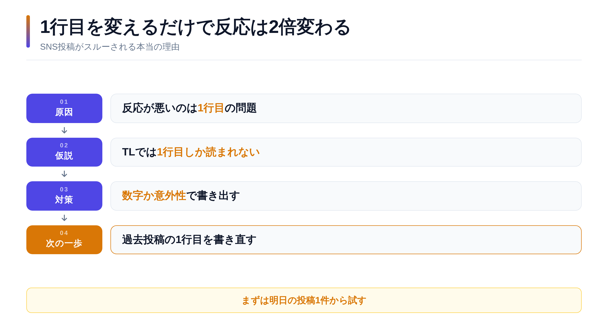
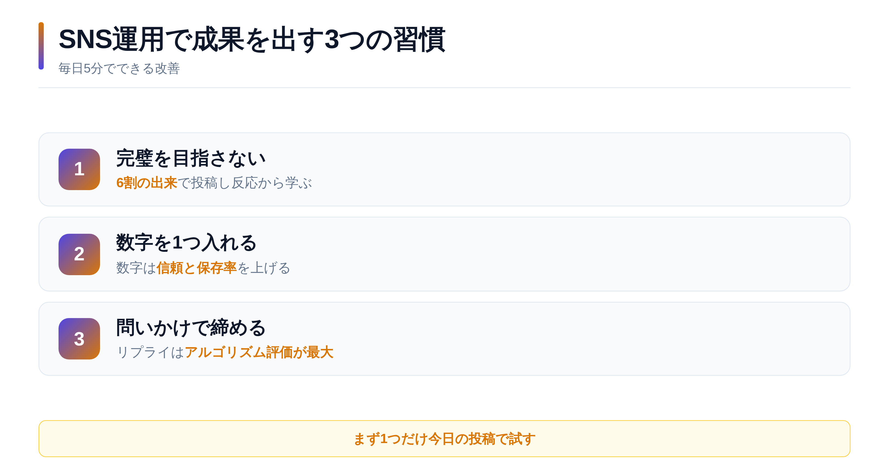
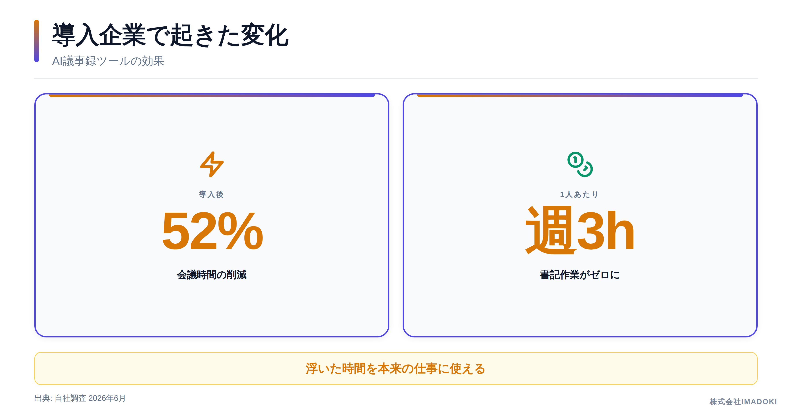

ネタ探しから投稿文・図解画像づくり、X / Threadsへの投稿、効果分析まで。面倒なことは、ぜんぶAIが自動で回します。
クレジットカード登録不要・最短翌日スタート
SNSの投稿、頑張って書いてるのに伸びない…その原因、実は本文じゃなく『1行目』かもしれません。 タイムラインで読まれるのは最初の1行だけ。反応が変わる書き出しのコツを図解にまとめました🧵

「今日何を投稿しよう…」から始まり、書いて、画像を作って。1投稿に1時間かかることも。
担当者が本業に追われて更新が停止。動いていないアカウントは、見た人の信頼を下げます。
頑張って投稿しても、何が良くて何がダメだったのか分からない。改善のしようがない。
原因は担当者の能力ではありません。「人力で回す仕組み」そのものに限界があるんです。
How it works
毎日の流れはこの3ステップ。すべてLINEとNotionで完結します。
業界ニュースとトレンドを収集し、投稿文5案＋図解画像を自動作成。LINEに「できました」と通知が届きます。
Notionを開いて、投稿したい案のステータスを変えるだけ。承認制なので「AIが勝手に変なことを言う」事故は起きません。
ベストな時間にX / Threadsへ自動投稿。夜に「いいね・表示回数」を自動計測し、翌朝のAIが伸びた型を学習します。
「AIのプロンプトは長いほど良い」は誤解でした。自分で5個のプロンプトを40%削って試したら『あ、本当だ』って気づいた——
🖼 3枚 承認 → 自動投稿PostgreSQL 19 betaの変化を1文で言うと：無駄な「ファイル再整理」を勝手にやる機能が賢くなった。データベースって使ってると——
🖼 1枚 承認待ち営業がAIエージェントを使って変わったのは『準備の速さ』。人間は交渉と信頼構築という本来の仕事に戻れる——
— 却下毎朝届く投稿案を、ボタンひとつで承認・却下。承認した案だけが自動投稿されます。
Real output
デザイナーゼロ・外注ゼロ。この品質の画像が、毎日自動で仕上がります。


アルゴリズムが違えば、伸びる文体も違う。同じテーマでも媒体ごとに最適な文章を生成します。
X版 — 断言調・テンポ重視・図解つき
「AIのプロンプトは長いほど良い」は誤解でした。 自分で5個のプロンプトを40%削って試したら『あ、本当だ』って気づいた。 制約が多いと、AIは『ルールの枠を出ない』ことに頭を使ってしまう。シンプルな指示1個のほうが、100%の力を引き出せます。 あなたの会社、『あれもこれも禁止』の指示になってませんか？
Threads版 — 会話調・問いかけでリプライを誘う
AIのプロンプトって長いほど良いと思ってたんですけど、削った方が良くなるって、実際やってみて初めて理解しました。 指示が多いとAIも『ルールの中で頑張ろう』みたいになって、本来の力が出せないんですね。わりと人間の組織と同じだ。 みなさんの会社の業務マニュアルとか部下への指示、『本当に全部必要？』って見直してみませんか？
どちらも同じ朝に、同じテーマから自動生成された文章です。
導入時に業種・ターゲット・文体・扱うテーマを貴社専用に設定。あなたの会社の「らしさ」で投稿を企画します。
住宅ローンの『変動か固定か』、営業マンに聞くと立場によって答えが変わります。 判断基準は実はシンプルで、『10年以内に繰り上げ返済の目処があるか』。今日は不動産屋が本音で解説します。
まかないで作った『鶏だし塩ラーメン』、スタッフに『これお店で出さないんですか？』と言われ続けて3ヶ月。 ついに来週から数量限定で出します。仕込みの裏側、ちょっとだけ見せちゃいます🍜
『シミ取りレーザーって1回で終わりますか？』 実はシミの種類によって適した治療は変わります。自己判断で市販品を使い続ける前に、まず種類を知ることが大切です。カウンセリングで確認している3つのポイントをご紹介します。
『縮毛矯正とストレートパーマ、どっちがいいですか？』 実はこれ、髪のダメージ履歴で答えが変わる質問なんです。カウンセリングで必ず聞いている3つの質問、公開します。
『求人を出しても応募が来ない』の原因、給与ではなく求人票の『1行目』であることが多いんです。 応募が集まる会社の求人票に共通する書き方、人材のプロが解説します。
『問題社員に辞めてもらいたい』というご相談、実は対応を一歩間違えると会社側が不利になるケースがあります。 トラブルになる前に知っておきたい基本の3つ、弁護士がわかりやすく解説します。
『インプラントと入れ歯、結局どっちがいいんですか？』 費用だけで決めると後悔しやすい選択です。あごの骨の状態・残っている歯・生活習慣。判断に必要な3つの視点を歯科医が整理しました。
『残価設定ローンってお得なんですか？』 実は乗り方次第で答えが真逆になります。年間走行距離と乗り換えサイクル、この2つで判断できる仕組みを営業トーク抜きで解説します。
『役員報酬、いくらに設定するのが正解？』 決め方を間違えると、同じ利益でも手元に残るお金が大きく変わります。税理士が考える設定の順番を、専門用語なしで解説します。
業種・ターゲット・文体・参照するニュース源まで、すべて貴社専用にチューニングしてお渡しします。
1投稿あたり約60分 × 月60投稿で運用した場合の一般的な例
BEFORE — 人力運用
AFTER — 自動運用
浮いた時間を、本来の仕事とお客様のために。
Voice
😩 課題: 兼任で手が回らず、投稿が3ヶ月止まっていた
SNS担当は私ひとりで、本業が忙しくなると真っ先に止まるのがSNSでした。今は毎朝勝手に投稿案が届くので、通勤電車の中で承認するだけ。アカウントが「生きている」状態を初めて維持できています。
⚠️ 課題: 医療系なので発信内容のリスクが怖かった
医療系は言葉選びひとつで問題になるので、AIに任せるのは正直不安でした。決め手は投稿前に必ず自分の目で確認できる承認制。トーンも院の雰囲気に合わせて調整されていて、患者様からの反応も柔らかくなりました。
📉 課題: 成果が見えず、続ける意味を説明できなかった
今までは「投稿して終わり」でしたが、いいねや表示回数が毎日自動で記録されて、どの投稿から問い合わせにつながったのか追えるようになった。SNSが初めて「営業活動」として社内で説明できるものになりました。
※ 記載の内容は、想定される活用シーンに基づく導入イメージです。
Features
最新ニュースを分析し、「保存したくなる」投稿文を毎朝5案。X用とThreads用で文体も書き分け。
高解像度のインフォグラフィックを自動作成。自社カラー・ロゴ・会社名入りにカスタマイズ可能。
投稿前に必ず人がチェック。ボタンひとつで承認・却下。企業アカウントに必須の安全弁です。
承認した投稿を設定時間に自動配信。複数枚カルーセルや補足リプライまで自動でぶら下げます。
いいね・表示回数・フォロワー推移を毎日自動記録。伸びた投稿の「型」を翌日のAIが学習します。
投稿案の到着、配信完了、毎晩の成果レポートまでLINEにお届け。管理画面を開く習慣は不要です。
Pricing
全プラン 10日間の無料トライアルつき（最低契約期間 6ヶ月）
スタンダード
¥19,800 /月
（税抜）
本気でSNSを集客に使いたい企業に。
プロ
¥49,800 /月
（税抜）
複数ブランド・代理店・本格運用に。
※ 別途、初期構築費 30,000円（税抜）を頂戴します。業種チューニング・Notion環境の構築・投稿設定まで、すべて弊社が代行する費用です。
※ 最低契約期間は6ヶ月です。7ヶ月目以降は月単位でご解約いただけます。
FAQ
ありません。投稿されるのは、あなたがNotionで承認した案だけです。承認しなかった案はそのまま破棄されます。企業アカウントの「炎上が怖い」という不安に応える設計です。
はい。日々の操作は「LINEの通知を見る」「Notionでボタンを押す」の2つだけで、スマホで完結します。初期設定はすべて弊社が代行するので、技術的な作業は一切ありません。
導入時に業種・ターゲット層・文体・扱うテーマ・参照するニュース源を貴社専用に設定します。さらに運用開始後は、実際に伸びた投稿をAIが学習し続けるため、使うほど貴社らしい投稿になっていきます。
X（Twitter）のアカウントと、無料のNotion・LINEだけです。セットアップは弊社が代行し、最短で申込みの翌日から投稿案が届き始めます。
最低契約期間は6ヶ月です（AIが貴社の「伸びる型」を学習し、成果が安定するまでの期間として設定しています）。7ヶ月目以降は月単位でご解約いただけます。解約後も投稿履歴や実績データはすべて貴社のNotionに残るため、そのまま資産として使えます。
トライアル期間中の費用はかかりません。合わなければそのまま終了でOK。
下のフォームから、1分でお申し込みいただけます。